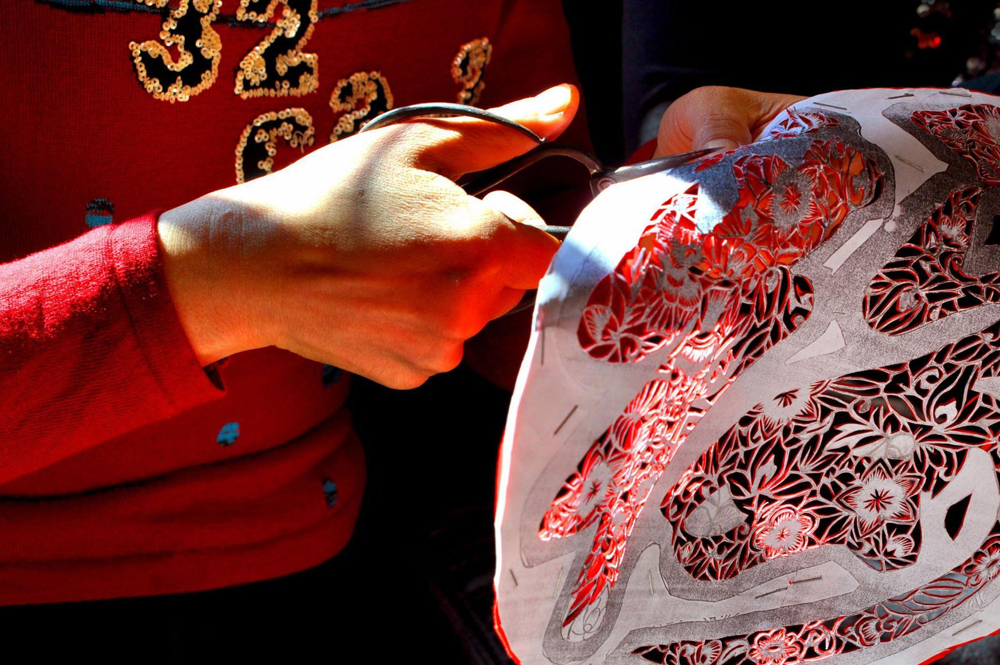
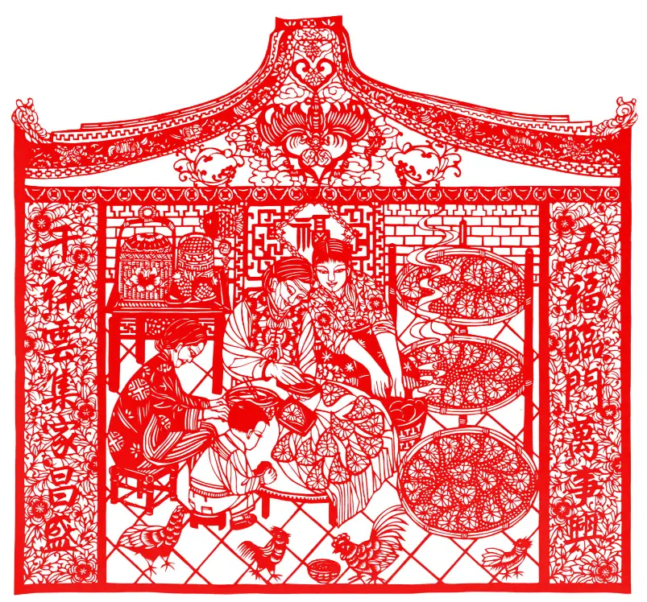

潮汕剪纸展览


潮汕剪纸是广东省潮汕地区的传统民间艺术，历史悠久，技艺精湛。本次展览汇集了众多潮汕剪纸艺术家的优秀作品，题材丰富多样，包括人物、动物、花卉、风景等，充分展示了潮汕剪纸的独特魅力和深厚文化底蕴。
在展览中，你可以欣赏到精美的剪纸作品，了解潮汕剪纸的历史渊源、制作工艺和文化内涵。同时，还设有互动体验区，让你亲身体验剪纸的乐趣。
展览时间：[2025年2月29号]
展览地点：[香港浸会大学]
潮汕剪纸是广东省潮汕地区的传统民间艺术，历史悠久，技艺精湛。本次展览汇集了众多潮汕剪纸艺术家的优秀作品，题材丰富多样，包括人物、动物、花卉、风景等，充分展示了潮汕剪纸的独特魅力和深厚文化底蕴。
在展览中，你可以欣赏到精美的剪纸作品，了解潮汕剪纸的历史渊源、制作工艺和文化内涵。同时，还设有互动体验区，让你亲身体验剪纸的乐趣。
展览时间：[2025年2月29号]
展览地点：[香港浸会大学]